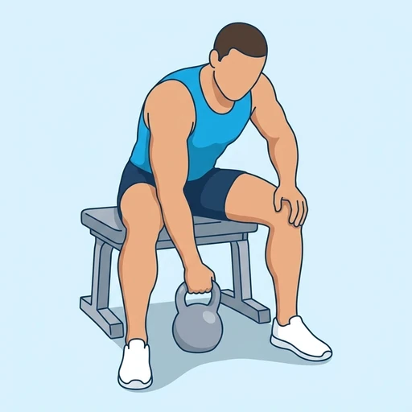

Kettlebell Concentration Curl
A seated single-arm bicep isolation move: the elbow braces against the inner thigh while curling a kettlebell, keeping the upper arm still so the bicep does all the work.
Upper arms · Kettlebell · Beginner


Muscles worked by the Kettlebell Concentration Curl
Primary
Secondary
Also called: bicep, biceps brachii, biceps muscle, guns.
Equipment
Also called: kb, cast iron kettlebell, competition kettlebell, girya.
How to do the Kettlebell Concentration Curl
- Sit on a bench with your feet wide, holding a kettlebell in one hand.
- Brace the back of your upper arm against the inside of your thigh, letting the kettlebell hang.
- Curl the kettlebell up toward your shoulder, keeping the elbow pinned against your leg.
- Squeeze the bicep at the top, then lower slowly under control.
- Finish all reps on one side, then switch arms.
Form tips
- Keep the upper arm braced and still -- only the forearm moves.
- Rotate the wrist slightly as you curl for a stronger peak contraction.
- Use a lighter weight than a standard curl -- strict form matters more here.
At a glance
| Body part | Upper arms |
|---|---|
| Category | Strength |
| Force type | Pull |
| Mechanic | Isolation |
| Difficulty | Beginner |
| Equipment | Kettlebell |
| Goals | Hypertrophy |
| MET | 5.0 (metabolic equivalent, for calorie estimates) |
| Unilateral | Yes |
| Bodyweight | No |
| Dataset id | kettlebell-concentration-curl |
Kettlebell Concentration Curl in German & Spanish
| German | Kettlebell-Konzentrationscurl |
|---|---|
| Spanish | Curl de concentración con kettlebell |
Descriptions, instructions and tips ship in all three languages in the JSON.
Related exercises
Exercise data (JSON)
The record below is exactly what exercises.json ships for this exercise — names, descriptions, instructions and tips in English, German and Spanish.
{
"id": "kettlebell-concentration-curl",
"name_en": "Kettlebell Concentration Curl",
"name_de": "Kettlebell-Konzentrationscurl",
"name_es": "Curl de concentración con kettlebell",
"description_en": "A seated single-arm bicep isolation move: the elbow braces against the inner thigh while curling a kettlebell, keeping the upper arm still so the bicep does all the work.",
"description_de": "Eine einarmige Bizeps-Isolationsübung im Sitzen: Der Ellenbogen stützt sich an der Innenseite des Oberschenkels ab, während eine Kettlebell gecurlt wird, sodass der Oberarm still bleibt und der Bizeps die ganze Arbeit leistet.",
"description_es": "Un ejercicio de aislamiento de bíceps a una mano, sentado: el codo se apoya contra la cara interna del muslo mientras se curla una kettlebell, manteniendo el brazo quieto para que el bíceps haga todo el trabajo.",
"category": "strength",
"force_type": "pull",
"mechanic": "isolation",
"difficulty": "beginner",
"equipment": "kettlebell",
"body_part": "upper_arms",
"primary_muscles": [
"biceps_brachii"
],
"secondary_muscles": [
"brachialis"
],
"goals": [
"hypertrophy"
],
"is_unilateral": true,
"is_bodyweight": false,
"instructions_en": [
"Sit on a bench with your feet wide, holding a kettlebell in one hand.",
"Brace the back of your upper arm against the inside of your thigh, letting the kettlebell hang.",
"Curl the kettlebell up toward your shoulder, keeping the elbow pinned against your leg.",
"Squeeze the bicep at the top, then lower slowly under control.",
"Finish all reps on one side, then switch arms."
],
"instructions_de": [
"Setze dich mit weit gestellten Füßen auf eine Bank und halte eine Kettlebell in einer Hand.",
"Stütze die Rückseite des Oberarms an der Innenseite des Oberschenkels ab und lass die Kettlebell hängen.",
"Curle die Kettlebell in Richtung Schulter, während der Ellenbogen am Bein fixiert bleibt.",
"Spanne den Bizeps oben kurz an und senke dann langsam und kontrolliert ab.",
"Beende alle Wiederholungen auf einer Seite, dann wechsle den Arm."
],
"instructions_es": [
"Siéntate en un banco con los pies bien separados, sujetando una kettlebell con una mano.",
"Apoya la parte posterior del brazo contra la cara interna del muslo y deja colgar la kettlebell.",
"Curla la kettlebell hacia el hombro, manteniendo el codo fijo contra la pierna.",
"Contrae el bíceps arriba y luego baja despacio y de forma controlada.",
"Termina todas las repeticiones de un lado y cambia de brazo."
],
"tips_en": [
"Keep the upper arm braced and still -- only the forearm moves.",
"Rotate the wrist slightly as you curl for a stronger peak contraction.",
"Use a lighter weight than a standard curl -- strict form matters more here."
],
"tips_de": [
"Halte den Oberarm fixiert und ruhig — nur der Unterarm bewegt sich.",
"Drehe das Handgelenk beim Curlen leicht ein für eine stärkere Spitzenkontraktion.",
"Nimm ein leichteres Gewicht als beim normalen Curl — hier zählt die saubere Ausführung mehr."
],
"tips_es": [
"Mantén el brazo fijo y quieto: solo el antebrazo se mueve.",
"Rota ligeramente la muñeca al curlar para una contracción máxima más fuerte.",
"Usa un peso más ligero que en un curl normal: aquí importa más la técnica estricta."
],
"met": 5.0,
"images": {
"flat": {
"start": "images/flat/kettlebell-concentration-curl-start.webp",
"peak": "images/flat/kettlebell-concentration-curl-peak.webp"
}
}
}Fetch just this exercise
const { exercises } = await fetch(
"https://exercise-dataset.com/exercises.json"
).then(r => r.json());
const ex = exercises.find(e => e.id === "kettlebell-concentration-curl");Free for personal and commercial in-app use with attribution (“Exercise data by RepDB”) — see the license and ready-made attribution snippets. Redistributing the data as a dataset or API is not permitted.